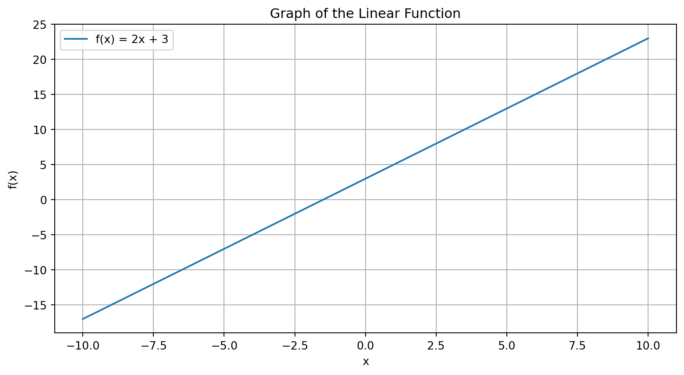
Calculus I
Lecture 20
Dr. Greg Chism
University of Arizona
INFO 511 - Spring 2025
Calculus in data science
Optimization Algorithms: Calculus is essential for understanding and implementing optimization algorithms like gradient descent, which are used to minimize error functions in machine learning models.
Modeling Change: Derivatives help in modeling and understanding the rate of change in various phenomena, which is crucial for predictive analytics and dynamic systems in data science.
Integral Applications: Integrals are used in calculating areas under curves, which is fundamental for probability distributions, statistical inference, and understanding cumulative effects in data analysis.
Functions and their graphs
A function is a relation between a set of inputs and a set of permissible outputs, where each input is related to exactly one output.
Mathematical notation: \(f(x)\) denotes a function named \(f\) with \(x\) as the input variable.
Linear function: \(f(x)=2x+3\)
Quadratic function: \(f(x)=x^2-4x+4\)
Exponential function: \(f(x)=e^x\)
Logarithmic function: \(f(x)=log(x)\)
Using matplotlib
Using SymPy
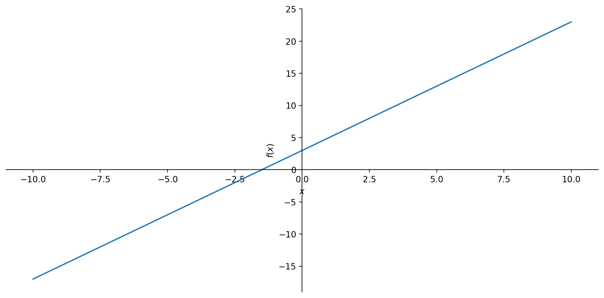
Using matplotlib
import matplotlib.pyplot as plt
import numpy as np
# Define the function
def f(x):
return 2 * x + 3
# Generate x values
x = np.linspace(-10, 10, 400)
y = f(x)
# Plot the function
plt.plot(x, y, label='f(x) = 2x + 3')
plt.xlabel('x')
plt.ylabel('f(x)')
plt.title('Graph of the Linear Function')
plt.legend()
plt.grid(True)
plt.show()Importance of functions in modeling
Predictive Modeling:
Functions predict outputs from inputs, essential for machine learning.
Example: Linear regression predicts continuous outcomes.
Descriptive Analysis:
Functions describe relationships, revealing patterns and trends.
Example: Growth functions model population or business growth.
Decision Making:
Functions formulate decision rules and optimization problems.
Example: Cost functions minimize expenses or maximize profits.
Overview of Calculus
Branch of mathematics that studies continuous change.
Differential (rates of change & slopes of curves)
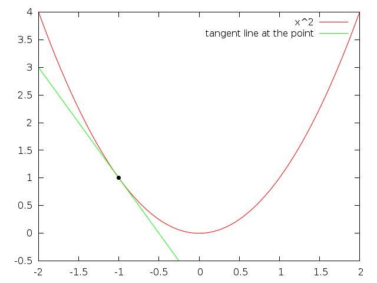
Integral (accumulation of quantities & areas under curves)
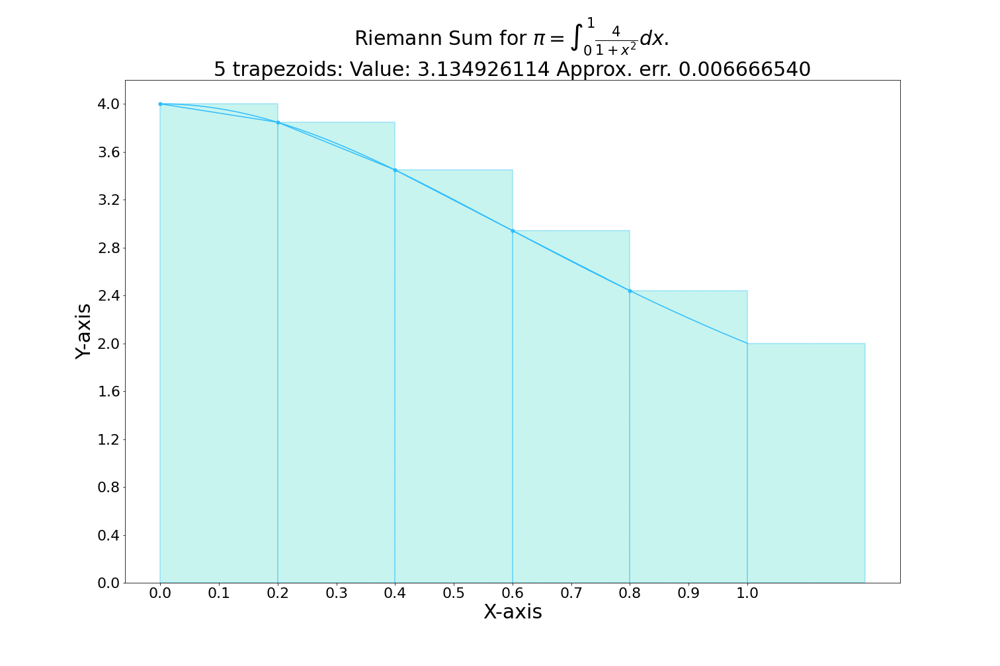
Differentiation and Integration
Measures the rate at which a quantity changes.
Example: In machine learning, the derivative of the loss function with respect to model parameters helps in finding the optimal parameters.
Symbol: \(\frac{dy}{dx}\) of \(f^{'}(x)\)
Practical Application: Gradient Descent Algorithm
Measures the accumulation of quantities and the area under a curve.
Example: Used to compute the area under probability distribution functions, which is essential in statistics and data analysis.
Symbol: \(\int f(x) dx\)
Practical Application: Calculating Cumulative Distribution Functions (CDFs)
Derivatives
Calculating the slope
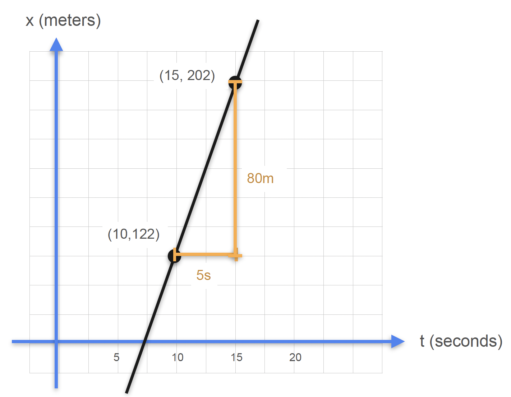
\(\text{slope}=\frac{\text{rise}}{\text{run}}\)
\(\text{slope}=\frac{\text{change in distance}(\Delta x)}{\text{change in time}(\Delta t)}\)
\(\text{slope}=\frac{x(15)-x(10)}{t(15)-t(10)}\)
\(\text{slope}=\frac{202m - 122m}{15s-10s}\)
\(\text{slope}=\frac{80m}{5s}=16m/s\)
The derivative
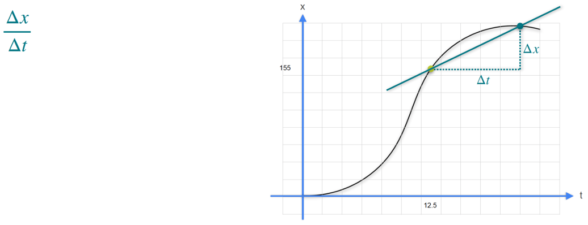The derivative
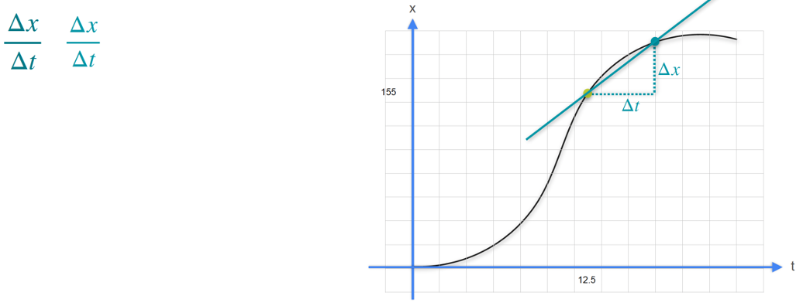The derivative
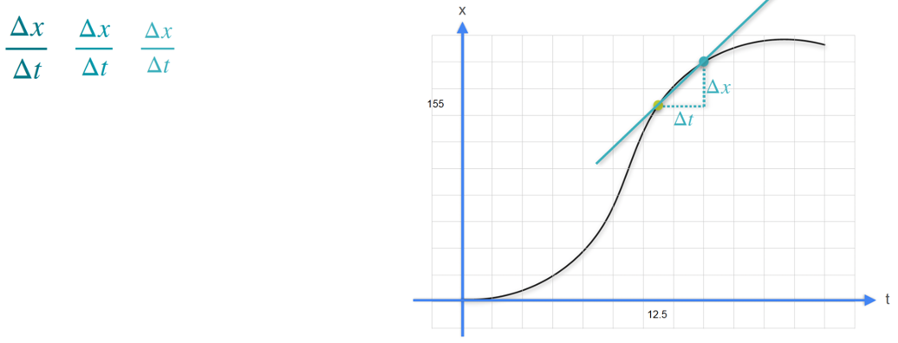The derivative
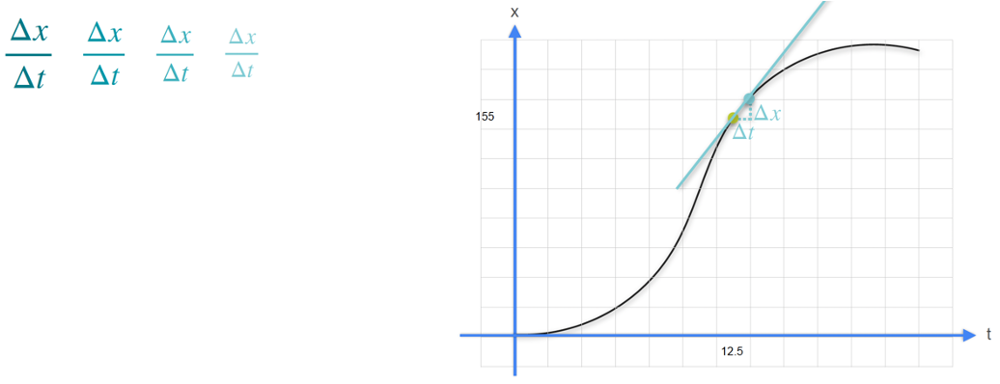The derivative
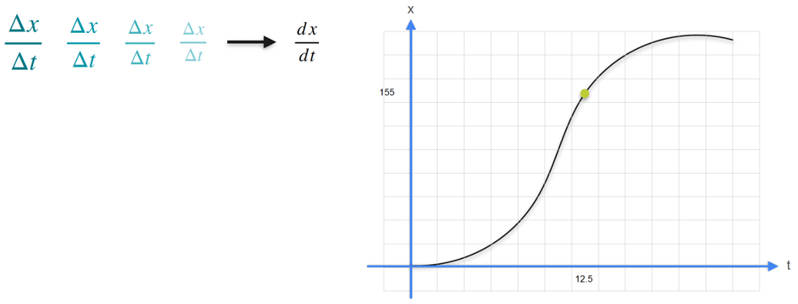The derivative
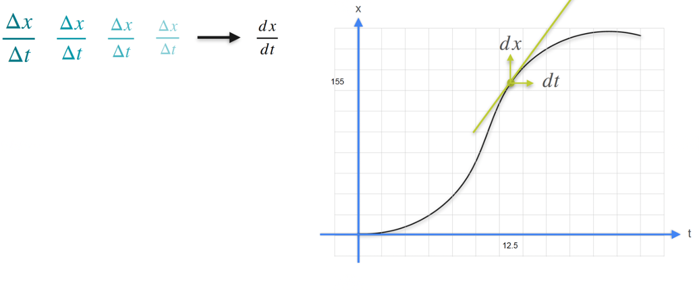Derivatives in Python
Calculating derivatives using SymPy
Solving derivatives
Differentiation rules
Constant rule: \(\frac{d}{dx} (c) = 0\)
Power rule: \(\frac{d}{dx} (x^n) = nx^{n-1}\)
Constant multiple rule: \(\frac{d}{dx} [c \cdot f(x)] = c \cdot f'(x)\)
Sum rule: \(\frac{d}{dx} [f(x) + g(x)] = f'(x) + g'(x)\)
Difference rule: \(\frac{d}{dx} [f(x) - g(x)] = f'(x) - g'(x)\)
Example 1: Differentiating a Constant
Function: \(f(x) = 7\)
Derivative: \(f'(x) = 0\)
Example 2: Power rule
Function: \(f(x) = x^3\)
Derivative: \(f'(x) = \frac{d}{dx} (x^3) = 3x^2\)
Example 3: Constant multiple rule
Function: \(f(x) = 5x^2\)
Derivative: \(f'(x) = 5 \cdot \frac{d}{dx} (x^2) = 5 \cdot 2x = 10x\)
Example 4: Sum and difference rule
Function: \(f(x) = x^3 + 4x - 5\)
Derivative: \(f'(x) = \frac{d}{dx} (x^3) + \frac{d}{dx} (4x) - \frac{d}{dx} (5) = 3x^2 + 4 - 0 = 3x^2 + 4\)
Solving complex derivatives
Complex Derivatives:
Involves functions composed of multiple less complex functions.
Requires application of rules like the chain rule and product rule for differentiation.
Example Function: \[ h(x)=(\ln(x) \cdot e^{ax})^k \]
- Objective: Find the derivative \(\frac{d}{dx}h(x)\)
The Chain Rule
\[ (f(g(x)))^{'}=f{'}(g(x)) \cdot g{'}(x) \]
- Used when differentiating a composition of functions
The Chain Rule: Composition
Function: \(f(x) = (3x^{2} + 2)^{5}\)
- Identify the Outer and Inner Functions
Outer function: \(u^5\)
Inner function: \(u = 3x^2 + 2\)
- Apply the Chain Rule
\(f{'}(x) = 5(3x^{2}+2)^{4} \cdot \frac{d}{dx}(3x^2 + 2)\)
The Chain Rule: Composition
Function: \(f(x) = (3x^{2} + 2)^{5}\)
- Differentiate the Inner Function
\(\frac{d}{dx}(3x^2 + 2) = 6x\)
- Combine the results
\(f{'}(x)=5(3x^2 + 2)^{4} \cdot 6x\)
\(f{'}(x)=30x(3x^2 + 2)^{4}\)
The Chain Rule: Nested composition
Function: \(g(x) = \sin(x^3 + 4x)\)
- Identify the Outer and Inner Functions
Outer function: \(\sin(u)\)
Inner function: \(u=x^3+4x\)
- Apply the Chain Rule
\(g'(x) = \cos(x^3 + 4x) \cdot \frac{d}{dx}(x^3 + 4x)\)
The Chain Rule: Nested composition
Function: \(g(x) = \sin(x^3 + 4x)\)
- Differentiate the Inner Function
\(\frac{d}{dx}(x^3 + 4x) = 3x^2 + 4\)
- Combine the Results
\(g'(x) = \cos(x^3 + 4x) \cdot (3x^2 + 4)\)
The Chain Rule: Complex nested composition
Function: \(h(x) = \left( e^{x^2} \cdot \ln(x) \right)^2\)
- Identify the Outer and Inner Functions
Outer function: \(u^2\)
Inner function: \(u=e^{x^{2}} \cdot \ln(x)\)
- Apply the Chain Rule
\(h'(x) = 2\left( e^{x^2} \cdot \ln(x) \right) \cdot \frac{d}{dx}(e^{x^2} \cdot \ln(x))\)
The Chain Rule: Complex nested composition
Function: \(h(x) = \left( e^{x^2} \cdot \ln(x) \right)^2\)
- Differentiate the Inner Function using the Product Rule
Inner function: \(u=e^{x^{2}} \cdot \ln(x)\)
Product rule: \((u \cdot v)' = u' \cdot v + u \cdot v'\)
Let \(u = e^{x^2}\) and \(\quad v = \ln(x)\)
\(u' = \frac{d}{dx}(e^{x^2}) = 2xe^{x^2}\)
\(v' = \frac{d}{dx}(\ln(x)) = \frac{1}{x}\)
The Chain Rule: Complex nested composition
Function: \(h(x) = \left( e^{x^2} \cdot \ln(x) \right)^2\)
- Combine the Produce Rule Results
\(\frac{d}{dx}(e^{x^2} \cdot \ln(x)) = (2xe^{x^2}) \cdot \ln(x) + e^{x^2} \cdot \frac{1}{x}\)
\(= 2xe^{x^2} \ln(x) + \frac{e^{x^2}}{x}\)
The Chain Rule: Complex nested composition
Function: \(h(x) = \left( e^{x^2} \cdot \ln(x) \right)^2\)
- Combine with the Outer Function Derivative
\(h'(x) = 2\left( e^{x^2} \cdot \ln(x) \right) \cdot \left( 2xe^{x^2} \ln(x) + \frac{e^{x^2}}{x} \right)\)
Simplify:
\(h'(x) = 2e^{x^2} \ln(x) \left( 2xe^{x^2} \ln(x) + \frac{e^{x^2}}{x} \right)\)
\(h'(x) = 2e^{x^2} \ln(x) \left( 2xe^{x^2} \ln(x) + e^{x^2} \cdot x^{-1} \right)\)
Partial derivatives
Partial derivatives
Definition:
A partial derivative represents the rate of change of a function with respect to one variable while keeping other variables constant.
Notation: \(\frac{\partial f}{\partial x}\) denotes the partial derivative of \(f\) with respect to \(x\).
Partial derivatives
Significance:
Essential in understanding functions of multiple variables.
Crucial for optimization in multivariable calculus.
Used in various fields such as physics, engineering, and economics to model complex systems.
Application in multi-variable functions
Multi-variable functions:
- Functions that depend on two or more variables, e.g., \(f(x,y)=x^2+y^2\)
Gradient:
The vector of all partial derivatives in a function.
Indicates the direction of the steepest ascent
Notation: \(\nabla f=(\frac{\partial f}{\partial x}, \frac{\partial f}{\partial y})\)
Partial derivatives in Python
Given the function \(f(x,y)=x^3+3xy+y^3\), calculate the partial derivatives with respect to \(x\) and \(y\):
Gradient descent
You’ll learn more about this in INFO 521: Introduction to Machine Learning

ae-13-derivation
Derivations (you will be tested on this in Exam 2)